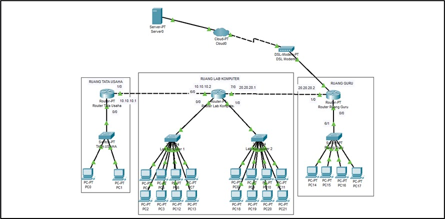

About Me
I am an Informatics Engineering student actively involved in various campus activities and strongly committed to academic and organizational development. With a GPA of 3,92. I demonstrate consistency, discipline, and responsibility in my studies and in completing various technology-based projects. In addition to my academic focus, I am also involved in organizations and campus activities that have helped me hone my leadership, communication, and teamwork skills. I am interested in software development, systems analysis, and technology-based problem solving.
For me, technology is more than just lines of code, but a means to create innovative solutions that are beneficial and have a broad impact. I remain committed to learning, developing, and making my best contribution in the field.

Skills & Expertise
Design
UI/UX Design, Cisco Packet Tracer & Visual Identity
Development
HTML, JavaScript, Python, Visual Studio Code, Apache Neatbens MongoDB, RapidMiner
Mobile
Mobile-First Design, Progressive Web Apps
Microsoft Excel
Data Analysis, Financial Modeling, Spreadsheets
Microsoft Power Point
Presentation Design, Visual Storytelling, Dynamic Slides
Microsoft Word
Document Drafting, Formatting, Report writing
Portopolio

Shawn Mendes Tour Ticket Reservation App
Shawn Mendes Tour Ticket Reservation System is a Java-based desktop application developed using NetBeans IDE. This application is designed to streamline the concert ticketing process through a user-friendly interface and automated logic.
E-commerce Platform
Toko Madju E-commerce Platform is a digital retail solution specifically designed for construction tools and home improvement supplies. This project focuses on delivering a seamless user experience with organized product categorization (Tools, Sanitary, Lighting, and Paint) and promotional banners, ensuring an efficient and modern online shopping journey.

Network Topology Design
Integrated Network Topology Design is a comprehensive network infrastructure simulation built with Cisco Packet Tracer. This project demonstrates the implementation of a multi-room connectivity solution, linking Administrative offices, Computer Labs, and Faculty rooms. It features structured cabling logic, router-to-router communication, and centralized server access for optimized data flow.

Smart Temperature Detection System
Smart Automated Temperature Control System is an IoT-based hardware project designed to maintain optimal environmental conditions within a simulated room. Utilizing temperature sensors and microcontroller logic, the system monitors thermal data in real-time and automatically triggers a cooling mechanism (fan) via relay when specific temperature thresholds are met, demonstrating a seamless integration between software logic and hardware execution.

Car Rental Management System
Integrated Car Rental Management System is a digital solution developed to streamline vehicle leasing operations. The application features comprehensive customer contact management, rental requirement validation, precise pick-up and drop-off location tracking, and an automated pricing engine that ensures accurate financial transactions for car rental services.ng temperature sensors and microcontroller logic, the system monitors thermal data in real-time and automatically triggers a cooling mechanism (fan) via relay when specific temperature thresholds are met, demonstrating a seamless integration between software logic and hardware execution.

Flower Classification Machine Learning
AI-Powered Flower Classification System is a Machine Learning project built with Python. It features a trained model that processes image data to identify various flower species such as Daisies, Dandelions, and Sunflowers. The application utilizes advanced image processing techniques, including resizing and flattening, to deliver real-time predictions with precise probability scores for each category.

Hospital Cashier System
Hospital Billing & Cashier System is a Python-based CLI application designed to automate medical transaction processes. Built with VS Code, it features automated discount logic, subtotal calculations, and real-time payment processing to ensure financial accuracy in hospital administration.

Student Grade Management System
Academic Student Management System is a digital educational platform designed to streamline school administrative tasks. The system features a modern dashboard that provides comprehensive analytics, including total student enrollment, active subjects, average grade performance, and graduation rates. This project emphasizes intuitive UI/UX design to enhance the efficiency of academic data processing and reporting.

Community Service Teaching
Community Service & Education Outreach is a social initiative focused on empowering the younger generation through interactive teaching and mentoring. In this role, I facilitated educational sessions for children, focusing on character building and foundational knowledge. This experience highlights my leadership, communication, and public speaking skills, demonstrating an ability to simplify complex information for a diverse audience.

3rd Winner IT Boot Camp
3rd Place Winner at IT Boot Camp is a prestigious recognition awarded by the Faculty of Engineering and Informatics. This achievement highlights my ability to develop innovative technology solutions under competitive pressure and effectively communicate technical concepts to a panel of experts. Winning this award validates my technical proficiency, strategic thinking, and commitment to excellence in the field of Information Technology.

National Computer-Based Assessment Support
National Computer-Based Assessment (ANBK) Support at SDIT Daruttaqwa is an initiative focused on educational technology implementation. My responsibilities included ensuring hardware readiness, monitoring network stability during high-stakes testing, and providing technical guidance to students. This experience demonstrates my proficiency in IT Support, troubleshooting, and managing digital infrastructure in an educational setting.

IT Boot Camp Workshop
IT Boot Camp Workshop themed "Digital Transformation: Integrating IoT and AI for Future Solutions" was an intensive technical training program held by the Faculty of Engineering and Informatics. During this workshop, I collaborated with a professional team to explore the synergy between smart sensors and artificial intelligence. The program emphasized designing systems capable of real-time data collection and intelligent processing to provide innovative solutions for industrial and social challenges.

Artificial Intelligence Workshop
The Artificial Intelligence Innovation Workshop was a collaborative technical program aimed at designing intelligent prototypes using advanced algorithms. Working in a specialized team, I focused on developing systems capable of automated decision-making and pattern recognition. This experience sharpened my analytical thinking, team project management, and the practical application of AI theories into functional, high-impact technology solutions.

Staff Accounting Experience
Serving as a Staff Accounting within the construction materials industry, I managed the end-to-end daily accounting cycle to ensure financial accuracy and transparency. My core responsibilities included recording material sales transactions, managing Accounts Payable/Receivable, and preparing comprehensive monthly financial statements. This role significantly enhanced my attention to detail in handling large datasets and provided deep insights into stock management and logistics within the construction supply chain.

Restaurant Crew Experience
Working as a Restaurant Crew at McDonald's has developed a strong work ethic within a high-pressure, fast-paced environment. My core responsibilities included delivering exceptional customer service, managing accurate order fulfillment, and ensuring food safety standards met strict international protocols. This role significantly improved my interpersonal communication, adaptability, and ability to work effectively within a large team to achieve operational excellence and service speed targets.

Cisco Python Essentials Certification
The Python Essentials 1 Certification is an international academic credential issued by Cisco Networking Academy in collaboration with the OpenEDG Python Institute. This certificate validates my proficiency in Python 3 syntax, algorithmic thinking, and problem-solving through computer processes. Achieving this credential demonstrates my technical readiness for professional software development and my ability to implement complex programming elements from the Python Standard Library.

Sertifikat IT Bootcamp UBSI
The IT Bootcamp Certification was awarded by the Faculty of Engineering & Informatics at Universitas Bina Sarana Informatika for successful participation in an intensive digital transformation program. The training focused on the integration of Internet of Things (IoT) and Artificial Intelligence (AI) to create future-ready technological solutions. This certification validates my proficiency in modern digital strategies and my ability to conceptualize innovative systems aligned with current industry 4.0 standards..

TOEIC Achievement Certificate
The TOEIC (Test of English for International Communication) certificate with a total score of 845 validates my advanced proficiency in the English language within a global business context. Achieving high marks in both Listening and Reading demonstrates my capability to engage effectively in international professional environments, comprehend complex technical documentation, and maintain clear communication with global stakeholders..

E-SPT Tax Training Certificate
The E-SPT Tax Training Certification was awarded by "Sung Tulodho" Vocational Training Center. I achieved a "Grade A" (Excellent) proficiency in managing E-SPT PPh Article 21 (Corporate) and E-SPT PPh Article 25/1771 (Corporate Tax Return). This credential validates my technical skills in utilizing national digital taxation platforms, significantly supporting my role in financial reporting and ensuring corporate tax compliance with high precision.

Sertifikat Ketua OSIS SMK Bakti Mandiri
Serving as the President of the Student Council (Ketua OSIS) 2021-2022 at SMK Bakti Mandiri Bekasi was a foundational milestone in my leadership development. In this role, I was responsible for leading the organization, designing annual work programs, and coordinating various student initiatives. This experience sharpened my skills in strategic decision-making, public speaking, conflict resolution, and team management, which remain the core pillars of my professional conduct today.

Sertifikat Workshop Pengembangan Aplikasi AI
The AI Application Development Programming Workshop Certificate is an official recognition of active participation in intensive training organized by the Informatics Study Program at Universitas Bina Sarana Informatika. This workshop focused on technical implementation and programming strategies for building Artificial Intelligence (AI) based solutions. Through this program, I have strengthened my ability to design and develop intelligent application architectures aligned with current technological advancements.
UNIVERSITAS BINA SARANA INFORMATIKA
I am an active student in the Informatics Engineering program at Universitas Bina Sarana Informatika (UBSI). Throughout my studies, I have focused on deepening my knowledge of software architecture, programming logic, and database management. This education has provided a solid technical foundation, enabling me to understand how information technology can be implemented to enhance efficiency across various industrial sectors.

Beyond classroom theory, I proactively expand my knowledge horizon through various competency development programs. I have participated in intensive workshops focusing on the integration of IoT and Artificial Intelligence (AI). This practical experience allows me to design intelligent digital solutions that are adaptive to the challenges of future digital transformation.
My dedication to informatics education is also proven by my achievement as 3rd Place in the IT Boot Camp organized by the faculty. This accomplishment, combined with various international technical certifications, reflects my ability to merge academic ethics with practical, competitive applications at a professional level.
Let's Work Together
Ready to bring your ideas to life? I'd love to hear about your project and discuss how we can create something amazing together.